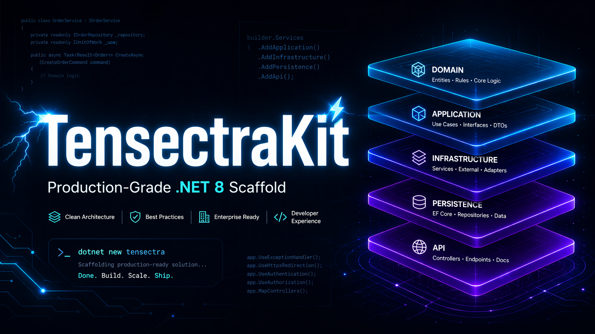
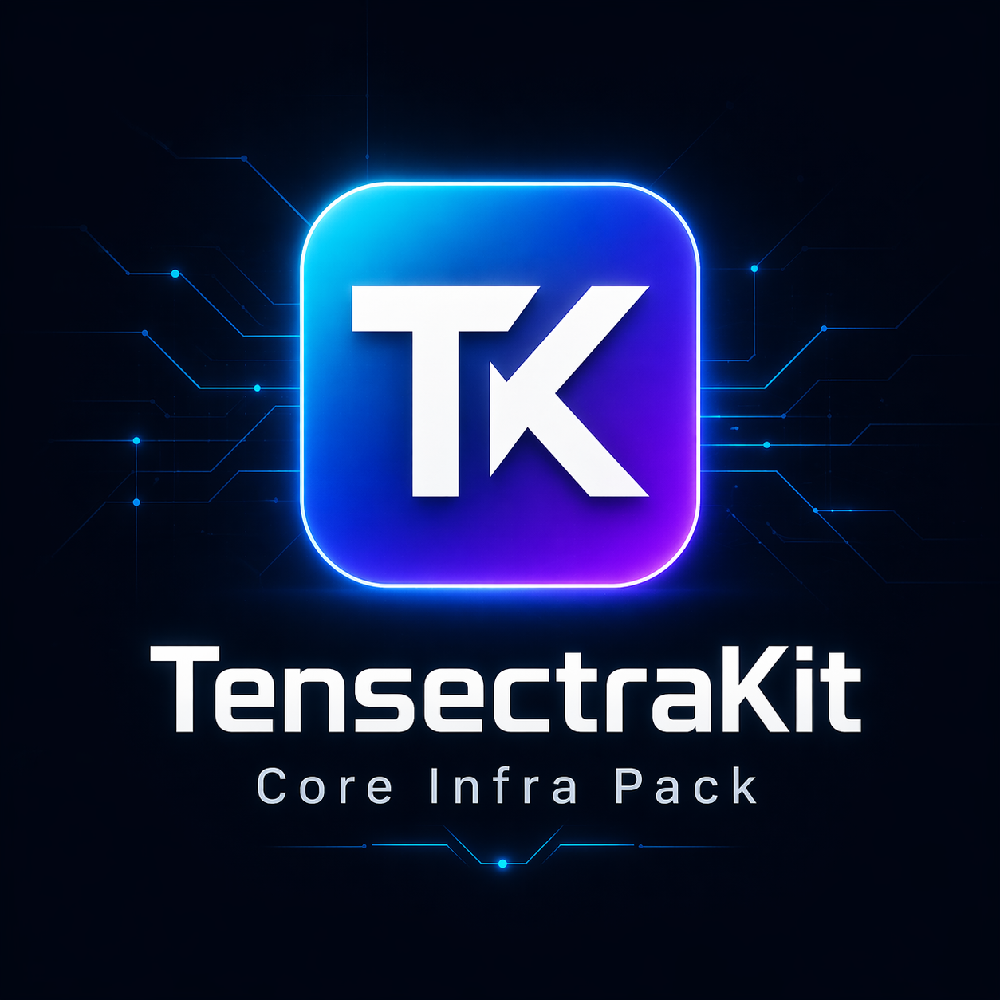
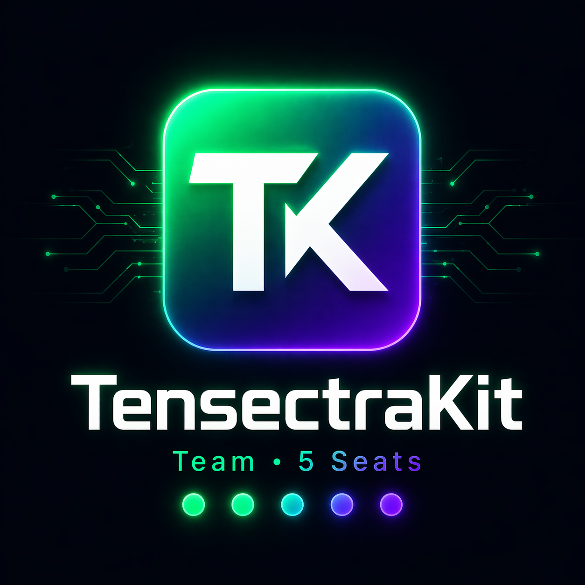
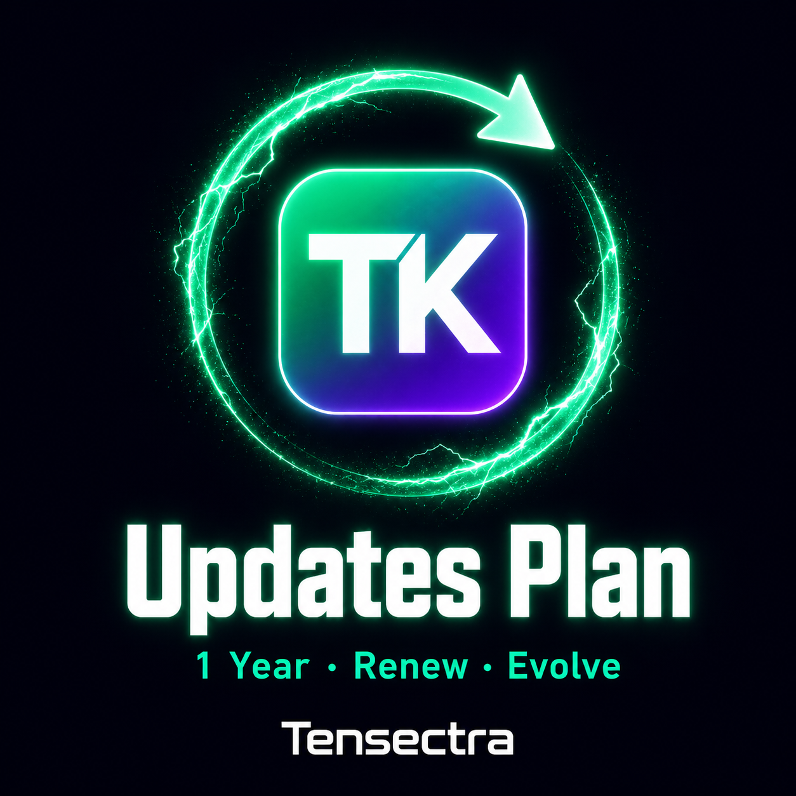

The .NET 8 scaffold running in production fintech today. 5 layers. 14 patterns. Kafka, Redis, CQRS, multi-tenancy. Install it. Name it. Ship it.
Production-proven in banking systems across Africa — instant access via Gumroad.
Everything you need to ship enterprise systems without starting from scratch.
Domain → Application → Infrastructure → API — all four layers fully wired from day one. MediatR, AutoMapper, and FluentValidation pre-configured. Every dependency points inward. Open the solution and start building your domain immediately.
Country-code-driven strategy pattern routes every request to the correct tenant service at runtime. Add a new market with one factory class — no controller changes, no routing changes. Nigeria, Ghana, and beyond, from a single codebase.
Three production Kafka Saga patterns pre-wired: Approval Saga, User Sync Saga, Customer Sync Saga — all idempotent with Kafka offset retry. Coravel background queue handles audit jobs off the critical path with automatic 3× retry built-in.
AES encryption at the API boundary — requests are decrypted on entry, responses re-encrypted on exit via middleware. JWT auth pre-wired. LanguageFilter and CountryFilter resolve locale per request. Your data never travels in plaintext.
Switch between SQL Server, Oracle, or PostgreSQL with a single config value — no code changes. Soft-delete, full audit trail (CreatedAt / UpdatedBy), bulk insert/update, and deterministic DB seeding are all pre-built and tested.
Install with dotnet new install TensectraKit.Template. Visual Studio 2022 wizard sets your DB engine, Redis, Kafka, and AES key. From zero to a running, named service in under 10 minutes.
From installation to production in three steps.
One dotnet new install registers the template globally. One dotnet new tensectrakit creates your named project. Every namespace, filename, and config reference auto-renames to match. Running in under 2 minutes.
Visual Studio 2022 opens a setup wizard. Choose DB engine, paste your connection string, set Redis and Kafka endpoints, enter your AES encryption key. Every value flows into appsettings.json — no placeholder hunting.
Dockerfile, health checks, Prometheus metrics, and Serilog structured logging — all included and pre-configured. The scaffold is production-hardened. Build your image, push, and deploy. No last-minute surprises.
Every pattern in this kit has been battle-tested in production financial SaaS serving banks across Africa.
“AI writes the code. You design the architecture. This scaffold teaches you the difference — and makes you dangerous with both.”
50+ battle-tested prompts for Copilot & Cursor — generate handlers, validators, sagas, and tests that match the scaffold’s exact patterns.
AI fills in the implementation. You make every pattern decision. The scaffold is the frame — you are the architect who decides what goes inside it.
The scaffold eliminates setup. AI eliminates boilerplate. You spend 100% of your time on real engineering decisions that matter to the business.
One payment. Permanent access. The scaffold eliminates months of setup — and ships with the documentation, prompt playbook, and community access that keep it valuable long after day one.

dotnet new NuGet template

Enterprise licensing, team workshops, architecture consultancy, and a dedicated support channel.
Instant access. You receive the download link and license key at your email the moment payment clears.
Reply with your GitHub username and we add you to the private repository within 4 hours.
Run dotnet new install TensectraKit once — then it lives in your Visual Studio 2022 wizard forever.
Run dotnet new tensectrakit -n YourServiceName. A fully named, fully wired service is live in your IDE. Start building immediately.
Every kit purchase includes access to the TensectraKit community. Ask questions, share patterns, and learn from engineers using the same scaffold in production.
Real conversations about CQRS, Sagas, multi-tenancy, and scaling patterns — not theory.
Stuck on an integration? Post it. Engineers who have shipped the same scaffold will respond.
New patterns and modules land in the community first — before the public release.
Included with every kit purchase. No extra cost.
“AI writes the code. You design the architecture. This scaffold teaches you the difference — and makes you dangerous with both.”
50+ battle-tested prompts for Copilot & Cursor — generate handlers, validators, sagas, and tests that match the scaffold’s exact patterns.
AI fills in the implementation. You make every pattern decision. The scaffold is the frame — you are the architect who decides what goes inside it.
The scaffold eliminates setup. AI eliminates boilerplate. You spend 100% of your time on real engineering decisions that matter to the business.